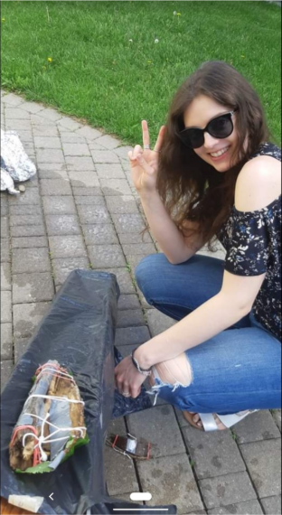
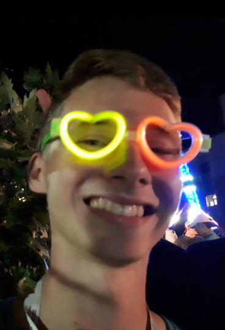

Meet the Leaders

Hi! My name is Pauline. I’m finishing up my last year at the University of Waterloo studying Kinesiology. I love walking, painting and being outside as much as I can. This is my third year working with ESQ and I’m really excited to be your leader. See you soon!

Hello! My name is Ryan, and I’m a psychology student at the University of Waterloo. I like video games, exercising, and learning new things. This is my first time working with ESQ, so you’re one of my first campers! I look forward to doing some awesome activities with you guys :D
Hi everyone! My name is Holden, and I will be your high school leader for the summer. I am going into grade 11 in the fall, and love mountain biking, snowboarding and listening to music. This is my second year with ESQ and I am excited to see what this summer has in store for all of us!